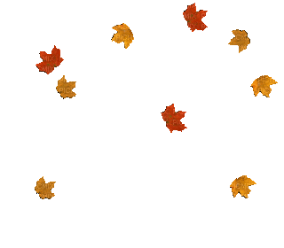

Weekly E
This week it started to look like fall outside! In class we had a work day,
and learned about puting images into our code and using interactive images.
We also learned about online identities with the class presenters of this week.
I thought it was interesting to think about the different ways that people use
online identities, and how some people use them for good, and some don't.
I started to research different artist portfolios online for inspiration.
I am hoping to create a portfolio website that matches the aesthetic of
my own art. My art style tends to bring up feelings of domesticity and
feelings of love and home and family. I also try to createrelatable
art in a cute style. I try to include my own thoughts and feelings in
the art in the hopes that others will find it relatable. I hope to create
a "cute" and simple, "safe-feeling", happy website that goes with my art
style.
BACK